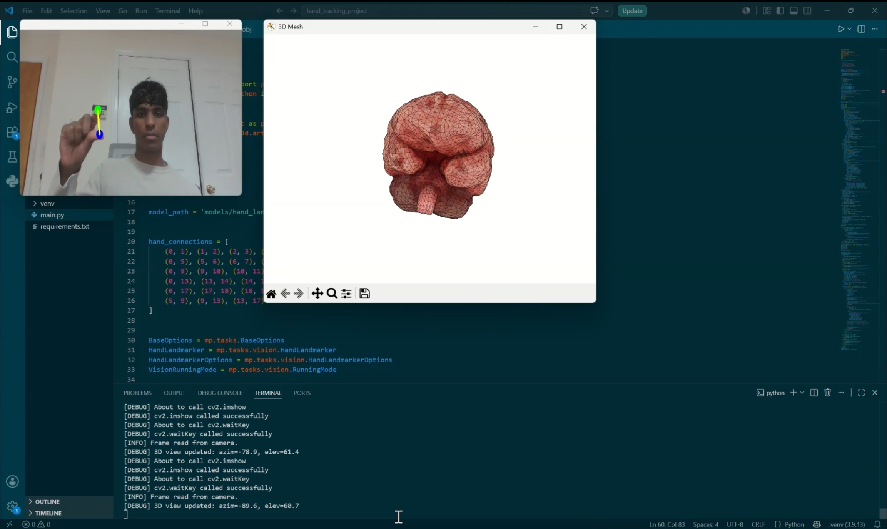

Gesture-Controlled Anatomical Visualizer
Description: A tool that allows users to manipulate and interact with 3D anatomical models (STL/PLY/OBJ) using hand gestures. This eliminates the need for physical input devices, maintaining a sterile environment for medical visualization.
System in action:

Demo Video: